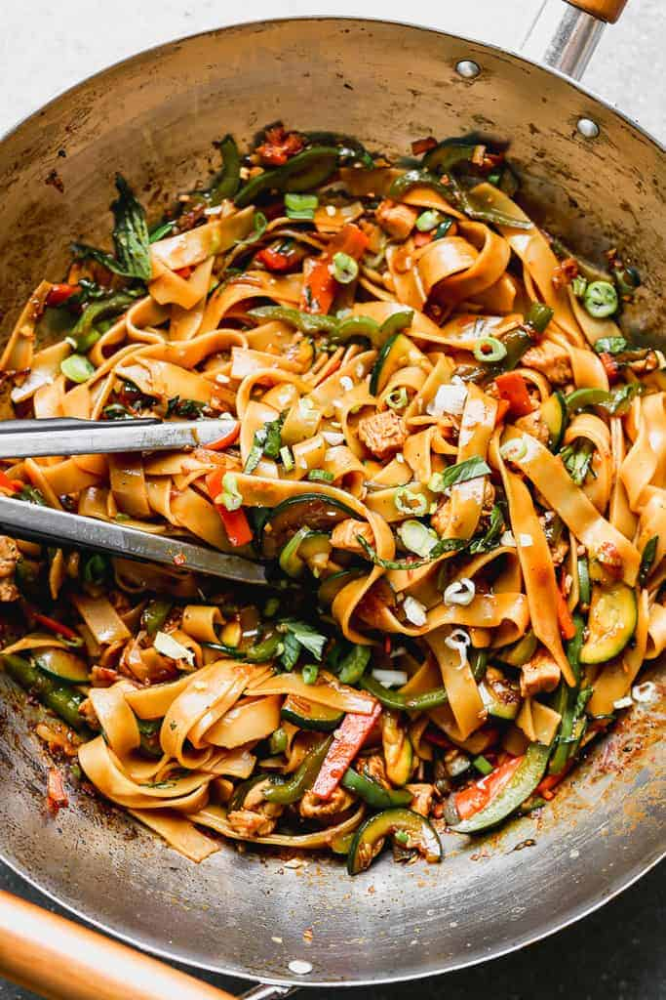

Drunken Noodles

Also known as Pad Kee Mao. It is Thai stir-fry dish that is traditionally a little spicy. It contains quite a bit of veggies as well.
The noodles are also a little thicker than regular chow mein/lo mein. It is also very adaptable with all types of meats and tofu, or even with just vegetables.
Ingredients
- Thai Holy basil
- Rice Noodles
- Produce: shallots, carrots, garlic, fresh ginger, zucchini, bell pepper, green onions, roma tomatoes, basil
- Sesame Oil
- Protein of choice (Chicken, beef etc.)
- Sauce Ingredients: oyster sauce, soy sauce, fish sauce, brown sugar, water, red chili sauce
Instructions
- Cook the rice noodles according to package instructions. Drain, rinse with with water and set aside.
- Prepare the sauce: Mix sauce ingredients in a small bowl.
- Cook protein of choice and vegetables. Heat oil in wok or large skillet over high heat. Add shallots and carrot and cook for 2 minutes. Add more oil and cook protein. Add garlic and ginger, add bell pepper, zucchini, and the whites of the chopped green onion and sauté.
- Add noodles and sauce. Toss and cook for a few minutes until warmed through. Remove from heat and stir in chopped basil
- 5. Serve immediately, garnished with remaining green onion and extra chili sauce, sriracha, or crushed red pepper, for added spice.